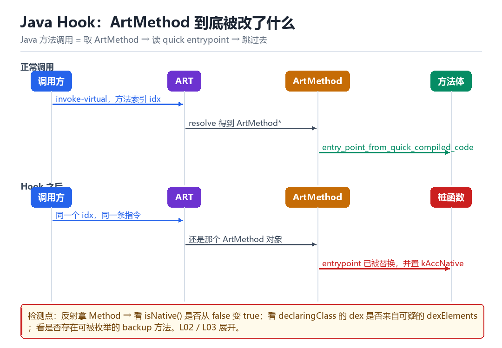

Android Java Hook 原理
Java Hook 到底改了什么
一个指针的替换，撑起了整个 Java 层的注入生态。
12.1 一次 Java 方法调用的真实过程
字节码里的 invoke-virtual 只带一个方法索引。ART 执行时会先 resolve 出 ArtMethod*，再读它的 entry_point_from_quick_compiled_code，然后跳过去。也就是说：方法调用的本质是“查表 + 跳转”。

12.2 把表项换掉
- 拿到目标方法的
ArtMethod*（反射、JVMTI、或扫描内存）。 - 备份原始的 entrypoint，以便“调用原方法”。
- 把自己的桩函数地址写进 entrypoint。
- 如果桩函数是 native 实现，还要把方法标志位改成
kAccNative。
听起来简单，实际有三个坑：一是 ArtMethod 的布局随版本变化（Android 14/16 有调整，见 L07/L08）；二是 JIT 可能已经把方法内联到调用者里，改 entrypoint 不生效，需要去优化（deopt，见 L03）；三是调用原方法要遵守 ART 的调用约定，不能简单跳回旧入口。
12.3 检测方怎么看
| 痕迹 | 怎么看 | 说明 |
|---|---|---|
| 方法变 native | Method.getModifiers() | 原本 Java 实现突然带 native 标志 |
| entrypoint 落在匿名段 | 读 ArtMethod 内存 | 需要 native 能力 |
| backup 方法可枚举 | 遍历类的方法列表 | 实现不严谨时会多出方法 |
| 调用耗时异常 | 统计 p95 延迟 | 桩函数 + 蹦床带来额外开销 |
auto m = get_art_method(env, clazz, "sign", "(Ljava/lang/String;)Ljava/lang/String;");
orig_entry = m->entry_point_from_quick_compiled_code;
// 陷阱：直接写会破坏 ART 的并发假设，正式实现要走 suspend + 内存屏障
m->entry_point_from_quick_compiled_code = (void*)my_trampoline;
m->access_flags |= kAccNative;12.4 本章自测
- Java 方法调用的两步是什么？
- 为什么要改 kAccNative 标志？
- JIT 内联为什么会让你 hook 失效？怎么解决？
- 检测方如何在不读内存的情况下发现方法被 hook？
12.5 深入：ArtMethod 布局的版本差异
ArtMethod 的字段顺序在不同 Android 版本里改过多次。写死偏移的代码，换一个版本就会读到垃圾数据。这也是为什么成熟的框架都会做“运行时探测 + 多套布局”。
| 版本区间 | 主要变化 | 影响 |
|---|---|---|
| 5.x – 7.x | declaring_class_ 在头部 | 早期实现依赖它 |
| 8.x – 11 | 引入 data_ 指针 | 布局重排 |
| 12 – 13 | 方法索引与指针分离 | 缓存策略要改 |
| 14+ | GC 与声明类处理调整 | 引用不能跨 GC |
12.6 三种拿 ArtMethod 的方式对比
| 方式 | 优点 | 缺点 |
|---|---|---|
| 反射 + 内部字段 | 无权限要求 | 字段名/布局随版本变 |
| JVMTI | 最接近真实 | 需要 attach，有痕迹 |
| 内存扫描 | 版本无关（靠特征） | 慢，且容易误判 |
12.7 调用原方法的三种写法
- 备份副本：复制一份 ArtMethod，把 entrypoint 指回原实现，调用这份副本。
- 蹦床：在跳板里保存现场、恢复原入口、调用、再切回。
- 原入口直调：需要处理 kAccNative 与调用约定，最容易出错。
第一种最稳，也是主流框架的做法；第二种性能最好但实现复杂；第三种只在特定场景下用。
12.8 原理推演：为什么“改一个指针”就够了
因为 ART 的方法调用是“间接”的：字节码里只有索引，真正的入口在运行时从 ArtMethod 里读。这种设计本来是为了支持 JIT（让同一个方法可以在解释执行与编译执行之间切换），但它同时也让“替换入口”变成一次简单的指针写。
| 执行模式 | 入口来源 | 能否被替换 |
|---|---|---|
| 解释执行 | interpreter 入口 | 能 |
| JIT 编译 | quick code 入口 | 能（但要 deopt） |
| AOT 编译 | oat 里的 code | 能（要处理 already-compiled |
12.9 数据细节：kAccNative 这个标志位
kAccNative = 0x0100
// 置位后：ART 认为这个方法的实现是 native 函数
// 调用时不再走 interpreter/JIT，而是走 JNI 调用约定
// 参数从“dex 寄存器”变成“JNI 参数”这就是为什么“桩函数必须是 native 实现”——如果你用 Java 方法做桩，却把标志位改成了 native，ART 会按 JNI 约定去调用一个 Java 方法，直接崩。
12.10 工程权衡：三种桩实现的对比
| 实现 | 性能 | 复杂度 | 适用 |
|---|---|---|---|
| Java 方法（不改标志） | 中 | 低 | 简单 hook |
| native 桩 + 蹦床 | 高 | 高 | 框架级 |
| 替换整个方法体 | 高 | 中 | 静态改动 |
贴着 invoke-virtual 那一纳秒
把镜头压到 ART 解释器/编译代码执行 invoke-virtual 的那一纳秒。字节码里只有一个方法索引，ART 先拿它 resolve 出一个 ArtMethod*，再从这个结构的 ptr_sized_fields_.entry_point_from_quick_compiled_code_ 里读出一个地址，最后一条 BLR 跳过去。一次 Java 方法调用，剥到底就是「查表 + 跳转」——和 native 里的 GOT 几乎是同一套戏法，只不过表换了个名字。
于是一个指针的替换，就撑起了整个 Java 层注入生态：把那个 entrypoint 换成自己的桩，顺手把 access_flags_ 置上 kAccNative，调用方毫无察觉地跳进了你的代码。但这套写法有个著名的「改了却没生效」，根子不在地址算错，而在 JIT——下面会讲到那一拍。
一次替换，ART 内部走过的七拍
- 调用者 → 对
invoke-virtual的方法索引 → 经解析缓存拿到ArtMethod*→ 结果：得到一个指向方法元数据的指针，还没决定跳哪。 - ART → 对
ArtMethod的 entrypoint 字段 → 读出编译代码入口（或解释器的桥接入口）→ 结果：确定本次调用的目标地址。 - hook 方 → 对目标方法 → 用反射 / JVMTI / 内存扫描定位
ArtMethod*，备份整个结构或至少备份 entrypoint → 结果：手里有了「原路」的副本。 - hook 方 → 对
access_flags_→ 置kAccNative，并把data_指向自己的 JNI 回调 → 结果：ART 从此按 native 方法的约定去取参数、进桩函数。 - hook 方 → 对 entrypoint → 写入蹦床地址，必要时让 ART 挂起所有线程、刷内存屏障 → 结果：新的调用路径接通，旧路径靠第 3 步的副本保留。
- 桩函数 → 对原方法 → 经备份的
ArtMethod调回去，再改参数或改返回值 → 结果：调用方拿到被加工过的结果，全程没有 Java 层的感知。 - 检测方 → 对
getModifiers()/ 调用耗时 / 方法列表 → 看有没有方法突然带 native 标志、有没有多出 backup 方法、p95 是否右移 → 结果：痕迹落在「元数据」而不是「字节」上。
动手：让方法自己报出被改了
// frida -U -f com.target.app -l flag_probe.js
Java.perform(function () {
var C = Java.use('com.target.SignUtil');
var Mod = Java.use('java.lang.reflect.Modifier');
function nativeNames() {
var arr = C.class.getDeclaredMethods(), out = [];
for (var i = 0; i < arr.length; i++) {
if (Mod.isNative(arr[i].getModifiers())) out.push(arr[i].getName());
}
return out;
}
console.log('native before =', JSON.stringify(nativeNames()));
C.sign.implementation = function (s) {
console.log('hooked in =', s);
return this.sign(s);
};
setTimeout(function () {
console.log('native after =', JSON.stringify(nativeNames()));
}, 500);
});成功的唯一硬判据是触发一次签名后打印出 hooked in = ...，说明入口确实被换、桩函数确实被调到；native before = [] 变成 native after 里多出 sign 则进一步说明这次实现走的是「置 native 位」的经典路线。失败按三种分：Java.use 抛 ClassNotFoundException，是目标类还没被加载——别加 sleep，改挂 Java.enumerateClassLoaders 等它真正出现；after 里没出现 sign 也不算失败，新版本可能只用跳板而不改标志位，此时仍以 hooked in 为准；打印了 hooked in 但业务结果没变，去查 JIT 是否把方法内联进了调用者，按下面这张表做去优化再试。
| 现象 | 真实原因 | 处理动作 |
|---|---|---|
| ClassNotFoundException | 类尚未被加载 / 在别的 ClassLoader | 挂 ClassLoader 的加载方法，等它出现 |
| hooked in 打印，业务不变 | JIT 已把方法内联进调用者 | 触发去优化，或 hook 更外层的调用点 |
| after 里 native 列表没变 | 实现走跳板而非置标志位 | 以 hooked in 为判据，别依赖标志位 |
| 换 Android 版本后读到垃圾数据 | ArtMethod 布局变了 | 运行时探测布局，别写死偏移 |
| 调用原方法直接崩 | 没遵守 ART 调用约定 | 改用备份副本，别跳旧入口 |
这个「查表 + 跳转」的模型，前面第 09 章的 GOT hook 已经演过一遍，只是表从 .got.plt 换成了 ArtMethod；第 11 章的「调用耗时分布」正是本章桩函数＋蹦床开销的落点；第 14 章拆 dex 时会看到，class_defs 里指向 class_data 的那些方法，最终就是被解析成这里一个个 ArtMethod；第五部 L03 / L07 会把去优化与跨版本布局适配逐行展开。